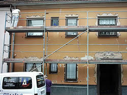
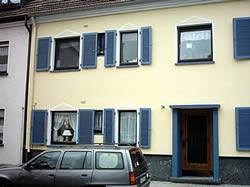
Fassade Reihenhaus
Neuer Fassadenanstrich in Hellgelb, Fensterläden in Blau.
Maler- und Lackierermeisterbetrieb · Saarbrücken St. Johann
Anstrich, Fassade, Tapete, Lack und Kreativtechnik aus einer Hand. Für Wohnhäuser, Arztpraxen, Kirchen, denkmalgeschützte Gebäude und Industrieobjekte – geführt in zweiter Generation von Maler- und Lackierermeister Christian Allenfort.
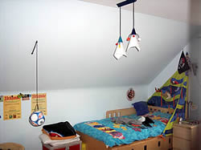
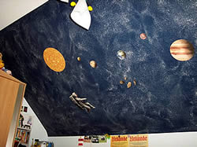
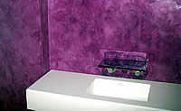
Leistungen
Von der Farbberatung am PC bis zum letzten Pinselstrich: Wir planen, beraten und führen aus – innen wie außen, in Wohnungen genauso wie in Kirchen, Praxen und Industrieobjekten.
Anstriche aller Art – vom Wohnzimmer bis zur Arztpraxis, Kirche oder Industriehalle. Ausschließlich VOC-reduzierte Qualitätsprodukte.
Mit Siliconharz-, Dispersions-, Silikat- oder Lotuseffekt-Farben. So ist Ihre Fassade wieder vor Witterung, Algen- und Pilzbewuchs geschützt – und sieht aus wie neu.
Hochwertige Tapezierarbeiten mit modernen und klassischen Tapeten für Wohn- und Geschäftsräume – vom Retro-Muster bis zur ruhigen Struktur.
Manuelle und maschinelle Lackierungen von Türen, Fenstern, Möbeln und Bauteilen – zum Beispiel die farbliche Aufarbeitung einer alten Kommode.
Glättetechnik, Lasurtechnik, Marmorierung und individuelle Wandmalerei – etwa ein Sternenhimmel im Kinderzimmer oder ein Wellenmotiv in der Kantine.
Individuelle Farbberatung für innen und außen. Ihre Farbgestaltung visualisieren wir mit Profi-Software am PC – Sie sehen das Ergebnis, bevor wir anfangen.
Sanierungs- und Bausubstanzerhaltungsarbeiten im Innenbereich – von der Altbausanierung bis zur Erhaltung historischer Substanz, auch in denkmalgeschützten Gebäuden.
Fassadendämmung mit Wärmedämm-Verbundsystemen sowie Dämmung von Kellerdecke und Dachboden – für niedrigere Heizkosten und ein angenehmes Raumklima.
Vorher / Nachher
Einblicke aus der Arbeit des Betriebs – von der Fassade über die Fachwerk-Sanierung bis zur lackierten Kommode.


Neuer Fassadenanstrich in Hellgelb, Fensterläden in Blau.
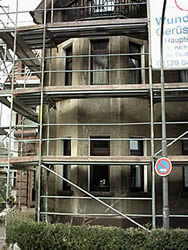
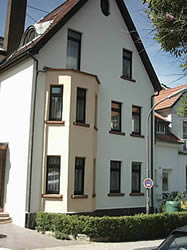
Verschmutzte Fassade mit Erker, frisch in Weiß und Beige gestrichen.
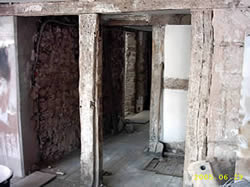
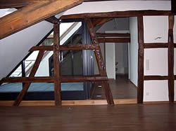
Fachwerkbalken aufgearbeitet, Wände hell, Boden in Holz.
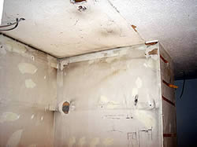
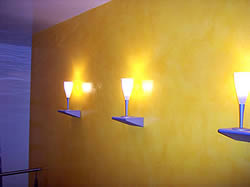
Glänzend gespachtelte Wand in Gold-Gelb.
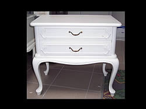
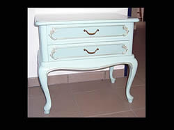
Barock-Kommode neu lackiert in Mintgrün.
Ihr Projekt
Fassade, Treppenhaus, Kinderzimmer oder das alte Lieblingsmöbel: Wir schauen es uns vor Ort an und zeigen Ihnen die Farbgestaltung vorab am PC.
Siegel und Mitgliedschaften
„sehr gut“
Der Betrieb trägt das Siegel „Ihr Malermeister – sehr gut“ von malertest.de. Es wird auf Grundlage von Kundenurteilen vergeben und neutral überwacht.
Mitglied der Maler- und Lackiererinnung des Saarlandes – Farbe, Gestaltung und Bautenschutz vom Fachbetrieb.
Eingetragener Betrieb (Betriebs-Nr. 0178050) und Ausbildungsbetrieb – Gesellen und Lehrlinge im eigenen Team.
Über uns
Am 1. August 1968 gründete Maler- und Lackierermeister Klaus Allenfort gemeinsam mit seiner Frau Anke Allenfort den Betrieb in der Neugeländstraße 3 in Saarbrücken. Seit dem 1. Januar 2002 führt Sohn Christian Allenfort, ebenfalls Maler- und Lackierermeister, das Familienunternehmen im eigenen Firmengebäude in der Halbergstraße 47 – direkt gegenüber der Joachim-Deckarm-Halle.
Der Betrieb ist Mitglied der Maler- und Lackiererinnung des Saarlandes, bei der Handwerkskammer des Saarlandes eingetragen und bildet selbst aus. Der Kundenstamm reicht weit über Saarbrücken hinaus: Ein- und Mehrfamilienhäuser, Arztpraxen, Kirchen, denkmalgeschützte Gebäude und Industrieobjekte.
Verarbeitet werden ausschließlich umweltschonende, VOC-arme Qualitätsprodukte. Und bevor ein Raum oder eine Fassade neue Farbe bekommt, zeigen wir Ihnen das Ergebnis als Farbgestaltung am PC.
Galerie
Drei Beispiele für Kreativtechniken und Wandgestaltung aus Projekten des Betriebs.
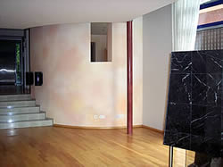
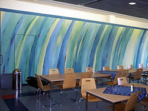
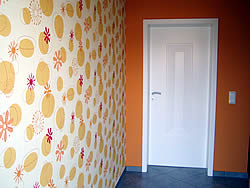
Kontakt
Rufen Sie an oder schreiben Sie uns – wir beraten Sie gerne vor Ort in Saarbrücken und Umgebung.
Fax 0681 6853965
Telefonisch erreichbar zu den Bürozeiten. Termine vor Ort nach Vereinbarung.
Angebot anfragen
Beschreiben Sie uns, was gemacht werden soll – Raum, Fassade oder Lackierung, wo und bis wann. Wir melden uns und vereinbaren einen Termin vor Ort.
Die E-Mail öffnet sich in Ihrem Mailprogramm mit einer kurzen Vorlage. Bürozeiten: Mo–Fr 7:00–18:00 Uhr.
Gut zu wissen: Handwerkerrechnungen sind steuerlich absetzbar – 20 % der Arbeitskosten, maximal 1.200 Euro pro Jahr, bei Zahlung per Überweisung.